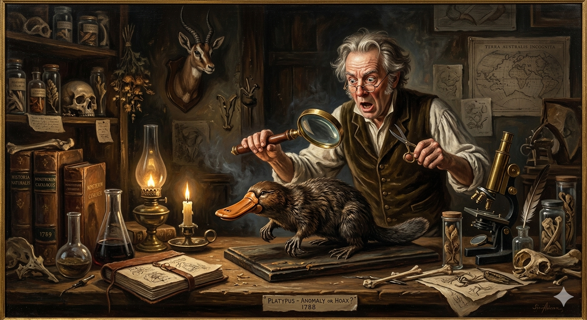

הברווזן
ממתיחה של פוחלצים אל פלא אבולוציוני שובר חוקים
מחקר אטימולוגי: מקור השמות
השם המדעי הטקסונומי: Ornithorhynchus anatinus
השם המדעי שניתן ליצור הזה הוא ניסיון נואש של המדענים לתאר את המראה המוזר שלו באמצעות שילוב של מונחים מיוונית עתיקה ולטינית:
- Ornitho (יוונית): קידומת שמשמעותה "ציפור" או "עוף" (όρνις - ornis).
- rhynchus (יוונית): משמעותו "חרטום" או "מקור" (ρύγχος - rhynchos). ביחד: "בעל חרטום של עוף".
- anatinus (לטינית): שם המין, שפירושו הפשוט הוא "דמוי ברווז" או "שייך לברווז". משמעות השם המלא היא: "בעל מקור העוף דמוי הברווז".
השם הנפוץ (באנגלית): Platypus
- Platypus: מגיע מיוונית עתיקה (πλατύπους). המילה מורכבת מ-platys (שטוח, רחב) ומ-pous (רגל). כלומר: "בעל רגליים שטוחות/רחבות". מעניין לציין שהשם הזה ניתן במקור לסוג של חיפושית, אך בסופו של דבר נשאר מזוהה עם היונק האוסטרלי.
התגלית שהטריפה את המדענים
בשנת 1798, קפטן ג'ון האנטר (John Hunter, 1737–1821), המושל השני של ניו סאות' ויילס שבאוסטרליה, נתקל ביצור ביזארי. הוא שלח פוחלץ שלו יחד עם איור בחזרה לבריטניה. כשהחבילה הגיעה ללונדון, הקהילה המדעית הייתה משוכנעת שזו רמאות.
בשנת 1799, הזואולוג הבריטי הנודע ג'ורג' שו (George Shaw, 1751–1813), בחן את הפוחלץ. בימים ההם, פוחלצים מזויפים (כמו בתולות ים שנתפרו מקופים ודגים) היו נפוצים בקרב מלחים שרצו להרוויח כסף. שו היה כל כך בטוח שאיזה פוחלץ סיני מיומן תפר מקור של ברווז לגוף של חיה דמוית בונה, שהוא פשוט לקח מספריים וניסה לגזור את המקור כדי למצוא את התפרים! עד היום, אם תלכו למוזיאון להיסטוריה של הטבע בלונדון ותבקשו לראות את הפוחלץ המקורי, תוכלו להבחין בסימני המספריים של שו. רק לאחר בדיקה מדוקדקת, המדענים נאלצו להודות בהלם: "המפלצת" של אוסטרליה אמיתית.
המציאות: יונק ששובר את כל החוקים
אם המדענים חשבו שהמראה שלו מוזר, הביולוגיה שלו התבררה כמוזרה פי כמה. הברווזן שייך לסדרת יונקי הביב (Monotremata) – סדרה עתיקה של יונקים ששרדו מתקופת הדינוזאורים. הוא מערער את ההגדרה הקלאסית של מה הופך חיה ל"יונק".
מאפיינים ביולוגיים בלתי נתפסים
- מטיל ביצים: בניגוד לרוב המוחלט של היונקים, הברווזן אינו ממליט גורים חיים, אלא מטיל ביצים (בדומה לזוחלים ולעופות).
- מניק ללא פטמות: לברווזנית אין פטמות. החלב פשוט מופרש דרך נקבוביות העור בבטנה, והגורים מלקקים אותו מהפרווה שלה כאילו היא מזיעה חלב.
- יונק ארסי: תופעה נדירה ביותר בקרב יונקים. לזכרים יש דורבן חלול דמוי קרן בקרסול רגלם האחורית, המחובר לבלוטת ארס. הארס אינו קטלני לבני אדם, אך גורם לכאב מייסר ומשתק שיכול להימשך חודשים, ומשמש אותם בעיקר לקרבות על טריטוריה.
- קולטני חשמל (Electroreception): כשהברווזן צולל למים, הוא עוצם את עיניו, אוזניו ונחיריו לחלוטין. כיצד הוא צד? המקור שלו מרושת בעשרות אלפי קולטנים חשמליים שמזהים את הפולסים החשמליים הזעירים שנוצרים מתנועת השרירים של סרטנים וחרקי מים!
- פרווה זוהרת: בשנת 2020 גילו מדענים תגלית מדהימה נוספת – תחת תאורת אולטרה-סגול (UV), הפרווה של הברווזן פולטת אור ביו-פלואורסצנטי וזוהרת בצבע ירוק-כחלחל!
תיעוד חזותי (לחץ להגדלה)

המיתוס: "מתיחת הפוחלץ של המלחים"

המציאות: פלא האבולוציה